Michael S Albergo
michaelsalbergo [at] gmail
albergo [at] nyu
Publications: google scholar
CV: Available upon request.

Building Normalizing Flows with Stochastic Interpolants
with Eric Vanden-Eijnden
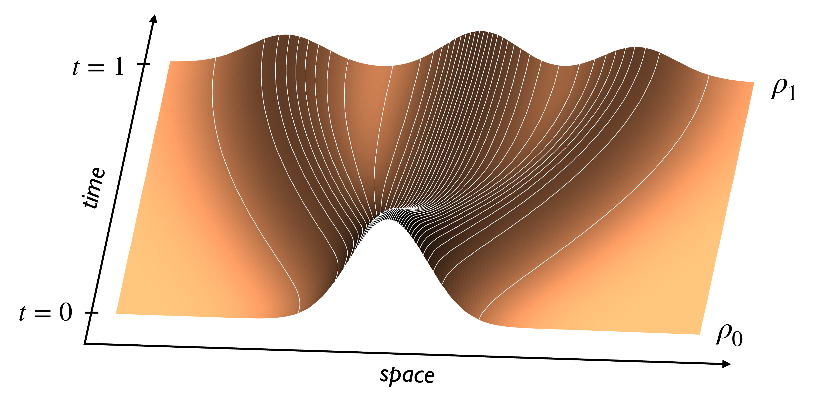
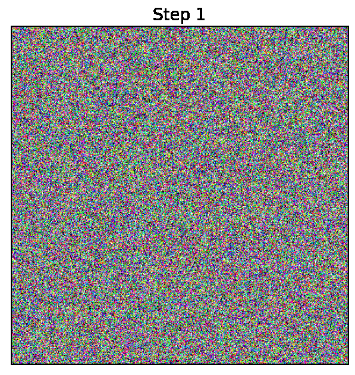
A simple generative model based on a continuous-time normalizing flow between any pair of base and target probability densities is proposed. The velocity field of this flow is inferred from the probability current of a time-dependent density that interpolates between the base and the target in finite time. Unlike conventional normalizing flow inference methods based the maximum likelihood principle, which require costly backpropagation through ODE solvers, our interpolant approach leads to a simple quadratic loss for the velocity itself which is expressed in terms of expectations that are readily amenable to empirical estimation. The flow can be used to generate samples from either the base or target, and to estimate the likelihood at any time along the interpolant. In addition, the flow can be optimized to minimize the path length of the interpolant density, thereby paving the way for building optimal transport maps. The approach is also contextualized in its relation to diffusions. In particular, in situations where the base is a Gaussian density, we show that the velocity of our normalizing flow can also be used to construct a diffusion model to sample the target as well as estimating its score. This allows one to map methods based on stochastic differential equations to those using ordinary differential equations, simplifying the mechanics of the model, but capturing equivalent dynamics. Benchmarking on density estimation tasks illustrates that the learned flow can match and surpass maximum likelihood continuous flows at a fraction of the conventional ODE training costs.
Preprint: ArXiv
Sampling QCD field configurations with gauge-equivariant flow models
with Ryan Abbott, Aleksandar Botev, Denis Boyda, Kyle Cranmer, Daniel C Hackett, Gurtej Kanwar, Alexander GDG Matthews, Sébastien Racanière, Ali Razavi, Dailo J Rezende, Fernando Romero-López, Phiala E Shanahan, and Julian M Urban
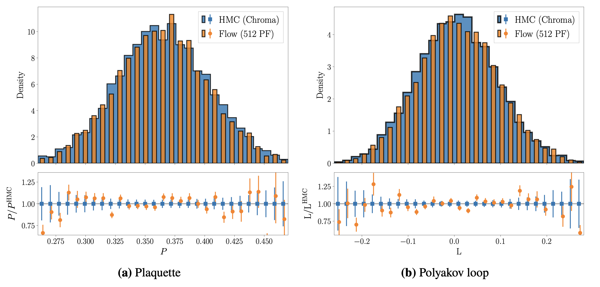
Machine learning methods based on normalizing flows have been shown to address important challenges, such as critical slowing-down and topological freezing, in the sampling of gauge field configurations in simple lattice field theories. A critical question is whether this success will translate to studies of QCD. This Proceedings presents a status update on advances in this area. In particular, it is illustrated how recently developed algorithmic components may be combined to construct flow-based sampling algorithms for QCD in four dimensions. The prospects and challenges for future use of this approach in at-scale applications are summarized.
Preprint: ArXiv
Non-Hertz-Millis scaling of the antiferromagnetic quantum critical metal via scalable Hybrid Monte Carlo
with Peter Lunts and Michael Lindsey
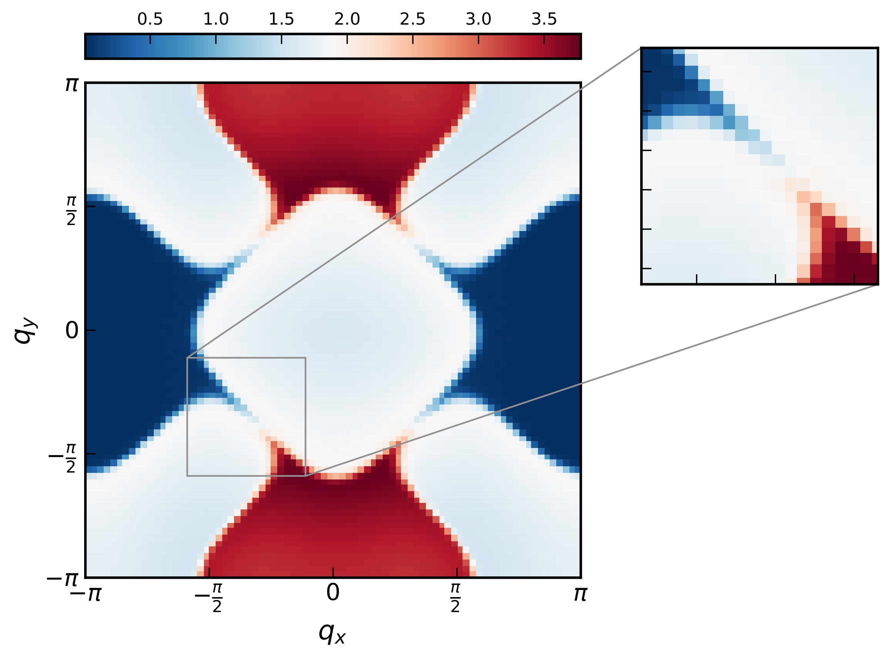
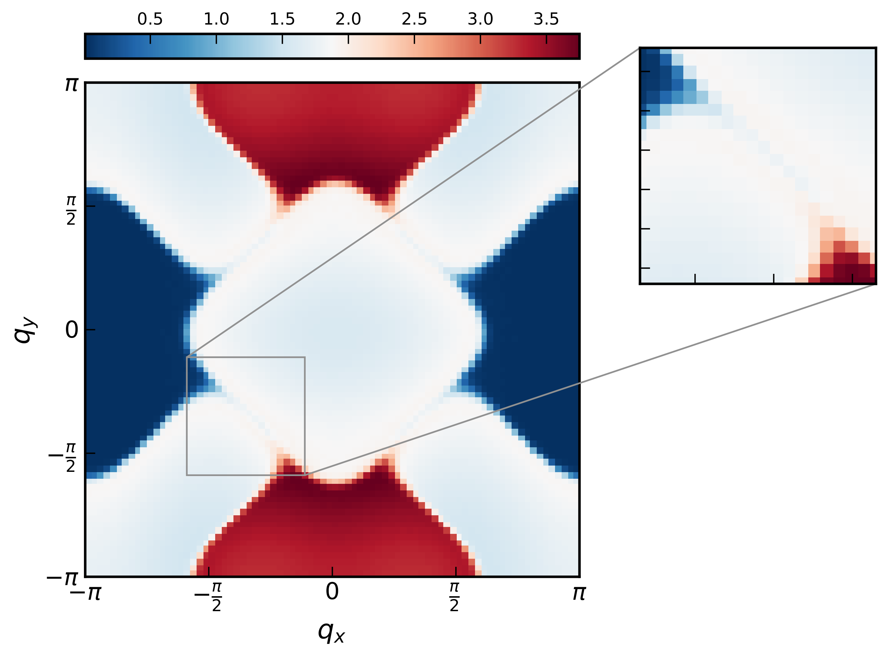
We numerically study the O(3) spin-fermion model, a minimal model of the onset of antiferromagnetic spin-density wave (SDW) order in a two-dimensional metal. We employ a Hybrid Monte Carlo (HMC) algorithm with a novel auto-tuning procedure, which learns the optimal HMC hyperparameters in an initial warmup phase. This allows us to study unprecedentedly large systems, even at criticality. At the quantum critical point, we find a critical scaling of the dynamical spin susceptibility χ(ω,q ) that strongly violates the Hertz-Millis form, which is the first demonstrated instance of such a phenomenon in this model. The form that we do observe provides strong evidence that the universal scaling is actually governed by the fixed point near perfect hot-spot nesting of Schlief, Lunts, and Lee [Phys. Rev. X 7, 021010 (2017)], even away from perfect nesting. Our work provides a concrete link between controlled calculations of SDW metallic criticality in the long-wavelength and small nesting angle limits and a microscopic finite-size model at realistic appreciable values of the nesting angle. Additionally, the HMC method we introduce is generic and can be used to study other fermionic models of quantum criticality, where there is a strong need to simulate large systems.
Preprint: ArXiv
Flow-based sampling in the lattice Schwinger model at criticality
with Denis Boyda Kyle Cranmer, Daniel C. Hackett, Gurtej Kanwar, Sébastien Racanière, Danilo J Rezende, Fernando Romero-López, Phiala E. Shanahan, and Julian M Urban
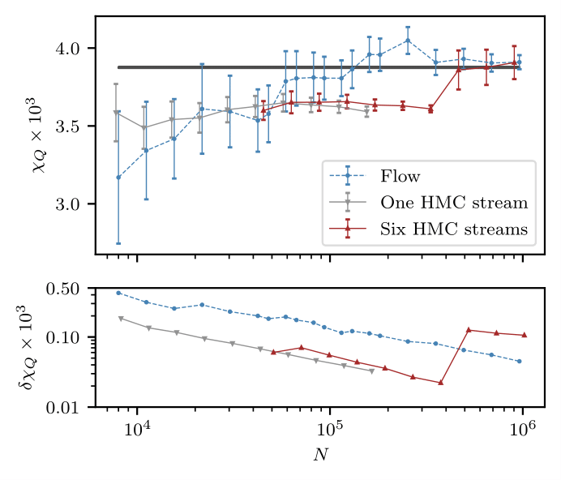
Recent results suggest that flow-based algorithms may provide efficient sampling of field distributions for lattice field theory applications, such as studies of quantum chromodynamics and the Schwinger model. In this work, we provide a numerical demonstration of robust flow-based sampling in the Schwinger model at the critical value of the fermion mass. In contrast, at the same parameters, conventional methods fail to sample all parts of configuration space, leading to severely underestimated uncertainties.
Preprint: ArXiv
Sampling using SU(N) gauge equivariant flows
with Denis Boyda, Gurtej Kanwar, Sébastien Racanière, Danilo Jimenez Rezende, Kyle Cranmer, Daniel C. Hackett, and Phiala E. Shanahan
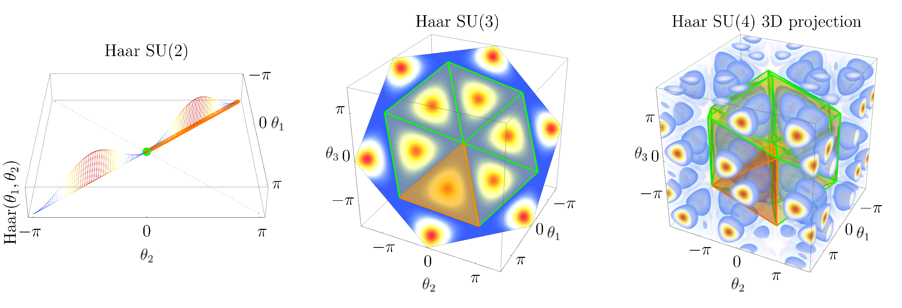
We develop a flow-based sampling algorithm for SU(N) lattice gauge theories that is gauge-invariant by construction. Our key contribution is constructing a class of flows on an SU(N) variable (or on a U(N) variable by a simple alternative) that respect matrix conjugation symmetry. We apply this technique to sample distributions of single SU(N) variables and to construct flow-based samplers for SU(2) and SU(3) lattice gauge theory in two dimensions.
Published: Physical Review D
Flow-based sampling for fermionic lattice field theories
with Gurtej Kanwar, Sébastien Racanière, Danilo Jimenez Rezende, Julian M. Urban, Denis Boyda Kyle Cranmer, Daniel C. Hackett, and Phiala E. Shanahan
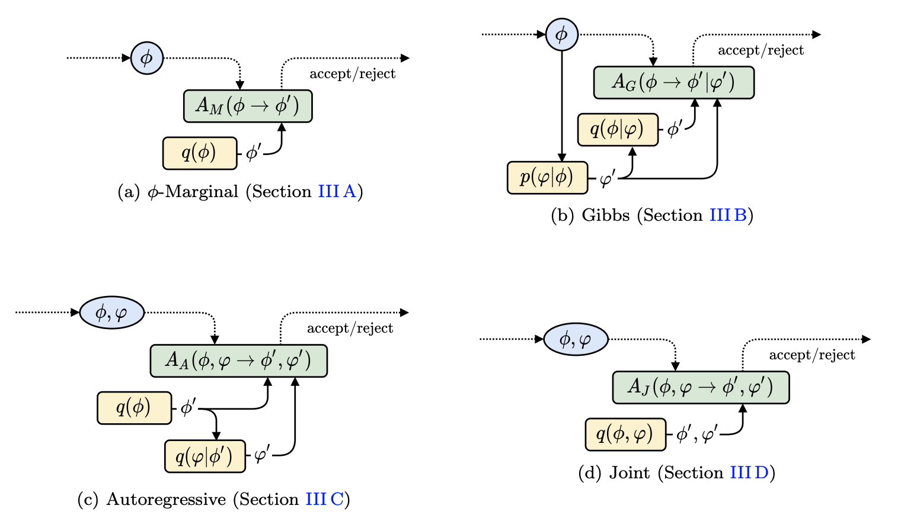
Algorithms based on normalizing flows are emerging as promising machine learning approaches to sampling complicated probability distributions in a way that can be made asymptotically exact. In the context of lattice field theory, proof-of-principle studies have demonstrated the effectiveness of this approach for scalar theories, gauge theories, and statistical systems. This work develops approaches that enable flow-based sampling of theories with dynamical fermions, which is necessary for the technique to be applied to lattice field theory studies of the Standard Model of particle physics and many condensed matter systems. As a practical demonstration, these methods are applied to the sampling of field configurations for a two-dimensional theory of massless staggered fermions coupled to a scalar field via a Yukawa interaction.
Preprint: Physical Review D
Equivariant flow-based sampling for lattice gauge theory
with Gurtej Kanwar, Denis Boyda, Kyle Cranmer, Daniel C. Hackett, Sébastien Racanière, Danilo Jimenez Rezende, and Phiala E. Shanahan
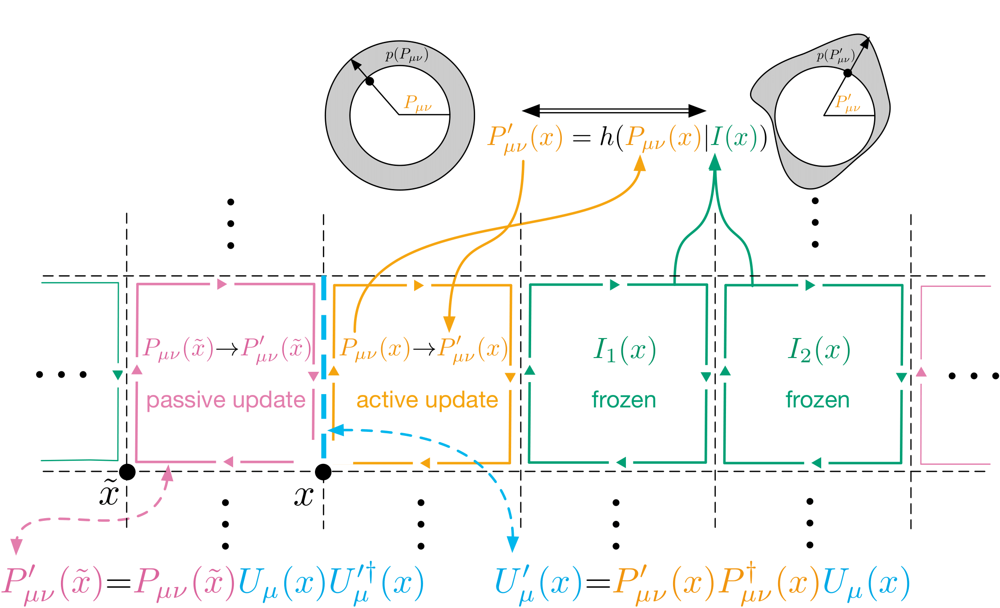
We define a class of machine-learned flow-based sampling algorithms for lattice gauge theories that are gauge invariant by construction. We demonstrate the application of this framework to U(1) gauge theory in two spacetime dimensions, and find that, at small bare coupling, the approach is orders of magnitude more efficient at sampling topological quantities than more traditional sampling procedures such as hybrid Monte Carlo and heat bath.
Published: Physical Review Letters
Normalizing Flows on Tori and Spheres
with Danilo Jimenez Rezende, George Papamakarios, Sébastien Racanière, Gurtej Kanwar, Phiala E. Shanahan, Kyle Cranmer
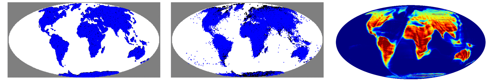
Normalizing flows are a powerful tool for building expressive distributions in high dimensions. So far, most of the literature has concentrated on learning flows on Euclidean spaces. Some problems however, such as those involving angles, are defined on spaces with more complex geometries, such as tori or spheres. In this paper, we propose and compare expressive and numerically stable flows on such spaces. Our flows are built recursively on the dimension of the space, starting from flows on circles, closed intervals or spheres.
Published: ICML 2020
Learnability scaling of quantum states: Restricted Boltzmann machines
with Dan Sehayek, Anna Golubeva, Bohdan Kulchytskyy, Giacomo Torlai, and Roger G. Melko
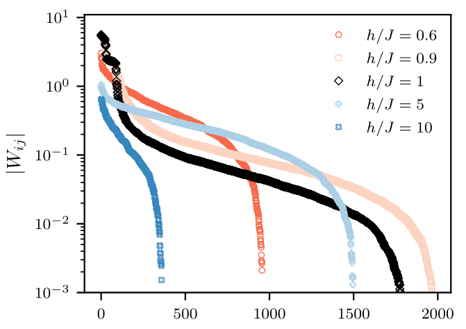
Generative modeling with machine learning has provided a new perspective on the data-driven task of reconstructing quantum states from a set of qubit measurements. As increasingly large experimental quantum devices are built in laboratories, the question of how these machine learning techniques scale with the number of qubits is becoming crucial. We empirically study the scaling of restricted Boltzmann machines (RBMs) applied to reconstruct ground-state wavefunctions of the one-dimensional transverse-field Ising model from projective measurement data. We define a learning criterion via a threshold on the relative error in the energy estimator of the machine. With this criterion, we observe that the number of RBM weight parameters required for accurate representation of the ground state in the worst case - near criticality - scales quadratically with the number of qubits. By pruning small parameters of the trained model, we find that the number of weights can be significantly reduced while still retaining an accurate reconstruction. This provides evidence that over-parametrization of the RBM is required to facilitate the learning process.
Published: Physical Review B -- Editor's Suggestions
Preprint: ArXiv
Flow-based generative models for Markov chain Monte Carlo in lattice field theory
with G. Kanwar, and P. E. Shanahan
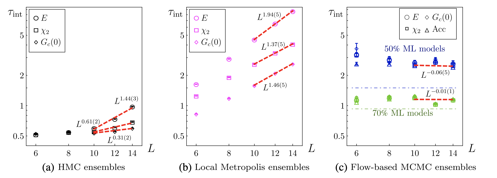
A Markov chain update scheme using a machine-learned flow-based generative model is proposed for Monte Carlo sampling in lattice field theories. The generative model may be optimized (trained) to produce samples from a distribution approximating the desired Boltzmann distribution determined by the lattice action of the theory being studied. Training the model systematically improves autocorrelation times in the Markov chain, even in regions of parameter space where standard Markov chain Monte Carlo algorithms exhibit critical slowing down in producing decorrelated updates. Moreover, the model may be trained without existing samples from the desired distribution. The algorithm is compared with HMC and local Metropolis sampling for ϕ4 theory in two dimensions.
Published: Physical Review D